Long Division
Below
is the process written out in full.
You will often see other versions, which are generally just a shortened version of the process below.
You can also see this done in Long Division Animation.
Let's see how it is done with:
- the number to be divided into is called the dividend
- The number which divides the other number is called the divisor
And here we go:
| 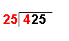 | 4 ÷ 25 = 0 remainder 4 | The first digit of the dividend (4) is divided by the divisor. |
| 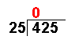 | The whole number result is placed at the top. Any remainders are ignored at this point. | |
| 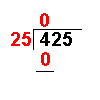 | 25 × 0 = 0 | The answer from the first operation is multiplied by the divisor. The result is placed under the number divided into. |
| 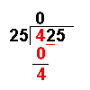 | 4 − 0 = 4 | Now we subtract the bottom number from the top number. |
| 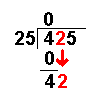 | Bring down the next digit of the dividend. | |
| 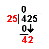 | 42 ÷ 25 = 1 remainder 17 | Divide this number by the divisor. |
| 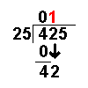 | The whole number result is placed at the top. Any remainders are ignored at this point. | |
| 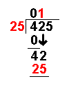 | 25 × 1 = 25 | The answer from the above operation is multiplied by the divisor. The result is placed under the last number divided into. |
| 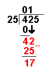 | 42 − 25 = 17 | Now we subtract the bottom number from the top number. |
| 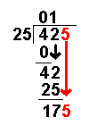 | Bring down the next digit of the dividend. | |
| 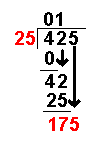 | 175 ÷ 25 = 7 remainder 0 | Divide this number by the divisor. |
| 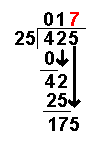 | The whole number result is placed at the top. Any remainders are ignored at this point. | |
| 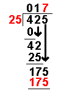 | 25 × 7 = 175 | The answer from the above operation is multiplied by the divisor. The result is placed under the number divided into. |
| 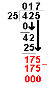 | 175 − 175 = 0 | Now we subtract the bottom number from the top number. |
| There are no more digits to bring down. The answer must be 17 |